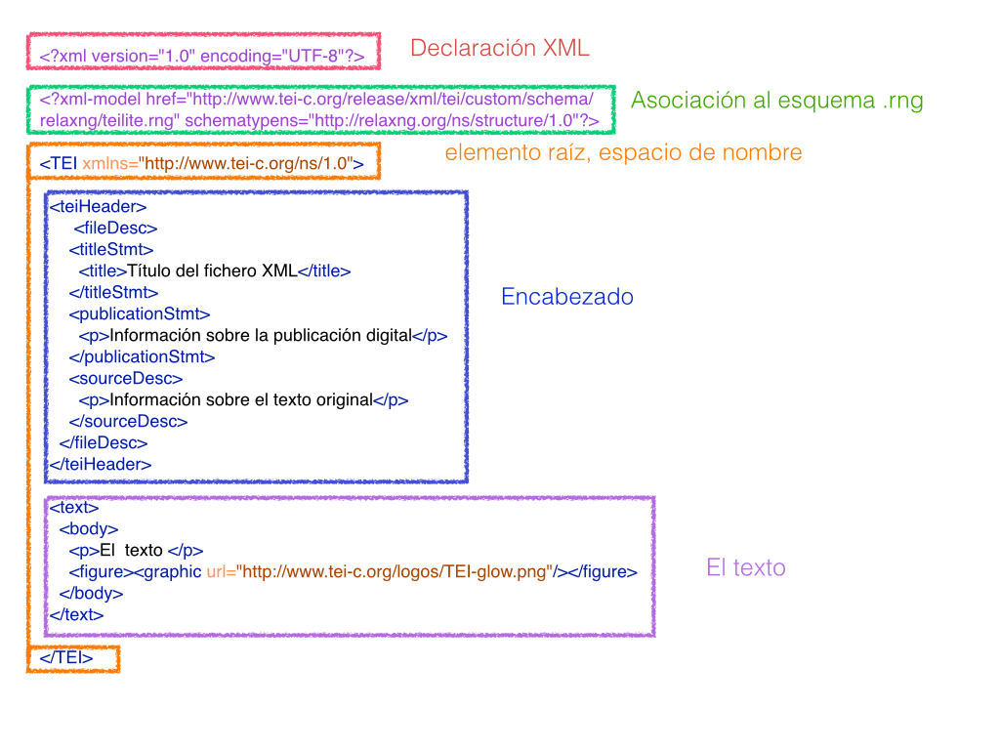

Introducción a la edición digital de Textos (TEI-XML)
Tema 3: La estructura básica de un documento TEI
En este tercer tema nos centraremos en la estructura básica de los documentos TEI-XML, estudiando solo aquellos elementos obligatorios e indispensables para empezar a trabajar con un documento TEI válido. En los temas siguientes, veremos con más detalles las secciones que ahora mencionaremos de una manera superficial.
Recapitulando algunas nociones del primer tema, recordaremos que TEI-XML es:
- un marco de trabajo basado en el lenguaje de marcado XML que define una serie de guías directrices y recomendaciones para marcar electrónicamente textos de cualquier disciplina y de cualquier época.
- al ser XML, TEI es a su vez independiente de cualquier programa y plataforma.
- el objetivo final es el de organizar y estructurar los textos electrónicamente de manera que puedan ser procesados y explotados por las máquinas.
- el tipo de marcado utilizado puede ser personalizado según las necesidades de cada texto o cada proyecto.
En el tema anterior tuvimos la ocasión de entender los mecanismos que rigen el lenguaje XML, ahora, pues, se trata de empezar a trabajar con las etiquetas que son propias del sistema TEI.
0. Visión de conjunto
Un documento TEI es un documento XML de manera que sigue la misma sintaxis que cualquier otro documento XML. En esta imagen se reproduce la estructura mínima de un documento XML-TEI, que básicamente se compone de:
- el prólogo XML
- el encabezado
- el cuerpo del texto

En el prólogo del documento XML-TEI encontramos elementos que ya hemos visto anteriormente:
- La declaración XML nos indica que se trata de un documento XML y que el tipo de codificación utilizado es el UTF-8.
- La asociación del modelo de esquema: en este caso se trata de un esquema RelaxNG (.rng). Es la misma asociación que establecían las DTD a través del DOCTYPE. Gracias a esta indicación sabemos que este documento XML-TEI depende de un esquema concreto, el TEI-Lite, que es un modelo minimalista de TEI donde se contemplan los elementos obligatorios y algunos de los más utilizados.
Acabado el prólogo, aparece el elemento raíz <TEI> que engloba la totalidad del documento. Aquí irán todos los otros elementos XML-TEI: el encabezado y el texto, con la siguiente estructura:
<TEI xmlns="http://www.tei-c.org/ns/1.0">
<teiHeader>
....
</teiHeader>
<text>
....
</text>
</TEI>1. Encabezado (teiHeader)
El documento TEI-XML consiste en dos grandes secciones: el encabezado que recibe el nombre de <teiHeader>, y el del texto propiamente dicho, llamado <text>.
En el encabezado encontramos los metadatos, es decir, las diferentes informaciones relativos al texto que estamos marcando.
Por ahora veamos cuáles son las partes obligatorias que aparecen por defecto al crear un documento XML-TEI con el programa oXygen:
<teiHeader>
<fileDesc>
<titleStmt>
<title>Título del fichero XML</title>
</titleStmt>
<publicationStmt>
<p>Información sobre la publicación digital</p>
</publicationStmt>
<sourceDesc>
<p>Información sobre el texto original</p>
</sourceDesc>
</fileDesc>
</teiHeader>El <teiHeader> tiene un solo elemento obligatorio, llamado <fileDesc>. Este elemento es el responsable de contener tanto la información sobre el fichero XML-TEI con el que estamos trabajando, como los detalles de la fuente primaria:
<titleStmt>contiene la información sobre el título del fichero propiamente dicho; éste a su vez debe ir dentro de un elemento más específico llamado<title>.<publicationStmt>recoge la información sobre la publicación digital; la información debe ir organizada en párrafos:<p><sourceDesc>contiene la información de la fuente original.
Pongamos un ejemplo de la Biblioteca Virtual Miguel de Cervantes; imaginemos que estamos haciendo la edición digital de una edición antigua de la La Regenta (tal y como aparece en este caso). El encabezado podría marcase de esta manera:
<teiHeader>
<fileDesc>
<titleStmt>
<title>La Regenta, por Leopoldo Alas (Clarín); prólogo de Benito Pérez Galdós</title>
</titleStmt>
<publicationStmt>
<pubPlace>Alicante</pubPlace>
<publisher>Biblioteca Virtual Miguel de Cervantes</publisher>
<date>2000</date>
</publicationStmt>
<sourceDesc>
<p>La Regenta, por Leopoldo Alas (Clarín). Prólogo de Benito Pérez Galdós, Madrid, Librería de Fernando Fé 1900</p>
</sourceDesc>
</fileDesc>
</teiHeader>En el <titleStmt> hemos incluido el nombre del archivo que, en este caso, puede ser igual al de la obra original. Nada impediría que decidiéramos titularlo de una manera diferente, por ejemplo, “Edición digital de la Regenta (1900)”. En el elemento de <publicationStmt> aparece la información relativa a la publicación digital, en este caso el lugar (Alicante), el editor (Biblioteca Virtual Miguel de Cervantes) y el año de la publicación (2000).
Por otro lado, en el elemento <sourceDesc> debe aparecer la información de la obra original. Aquí se señala la información de la edición original de 1900. Podríamos, además, enriquecer las informaciones con la localización de la obra original, la división en tomos o cualquier otro dato que consideráramos pertinentes.
En las guías directrices de TEI encontraréis toda la documentación relativa al teiHeader, así como múltiples ejemplos.
**2. El cuerpo del documento (<text>, <body>)
El cuerpo del documento corresponde al elemento <text> que puede contener, a su vez, tres (sub-)elementos:
<front>: se utiliza para marcar elementos paratextuales que preceden el texto, tales como prefacios, prólogos, cartas dedicatorias, una lista de personajes, etc. No es obligatorio.<body>: se consagra al texto propiamente dicho del documento y es obligatorio.<back>: puede utilizarse para añadir los apéndices, índices, cronologías, bibliografías, etc. No es obligatorio.
Siguiendo con el ejemplo anterior podríamos marcar el texto con la siguiente estructura:
<text>
<front>
<div type="prologo">
</div>
</front>
<body>
<div type="tomo" n="1">
<div type="capitulo" n="1">...</div>
<div type="capitulo" n="2">...</div>
<div type="capitulo" n="3">...</div>
</div>
<div type="tomo" n="2">
<div type="capitulo" n="1">...</div>
<div type="capitulo" n="2">...</div>
<div type="capitulo" n="3">...</div>
</div>
</body>
</text>3. Divisiones (<div>)
Uno de los elementos más utilizados en el cuerpo del documento es el de “división”, <div>, que es utilizado para marcar cualquier tipo de sección estructural del texto, como tomos o volúmenes, libros, capítulos, partes, apartados, etc.
Del ejemplo anterior, podéis observar cómo hemos utilizado el elemento <div> para:
- caracterizar el “prólogo”.
- diferenciar los diferentes “tomos”.
- estructurar los diferentes “capítulos”.
Al afrontar cualquier estructuración de un texto, es pues un buen ejercicio empezar identificando las diferentes secciones del texto con <div> diferentes. Normalmente, cada una de las <div> tiene un atributo @type1 que ayuda a caracterizar esa sección en particular. El valor que puede conllevar @type es libre, con lo cual podemos utilizar el que mejor nos convenga (ej. libro, capítulo, escena, acto, poema, estrofa, etc.) y en la lengua que queramos.
Otro atributo muy utilizado es el @xml:id que asigna un identificador único a aquella sección particular del texto. Este mecanismo es imprescindible en el caso que queramos aislar determinadas porciones del texto. Por ejemplo, con este mecanismo al buscar una palabra podremos recuperar fácilmente en qué sección del libro estaba. El @xml:id se puede utilizar en una gran variedad de elementos, como bien podéis imaginaros es realmente útil en los casos de capítulos, líneas, versos, páginas, etc. Además, identificando las secciones de esta manera facilitamos el que otras partes del documento apunten a esa sección en concreto; de hecho, para la creación de “link” este es un requisito indispensable: para crear un enlace necesitamos decirle al ordenador que vaya de un punto hacia otro, es decir, de un punto hacia un identificador concreto. Un elemento <div> con los atributos mencionados tendría esta forma:
<div type=“tomo” xml:id=“tomo_1” > ...</div>El texto o la masa textual se incluye siempre al interior de elementos más concretos; no podemos añadir texto directamente dentro del elemento <div>. Por eso, en el caso que tengamos párrafos, utilizaremos el elemento <p>; en el caso que tuviéramos otros fragmentos de texto que no fueran párrafos, se podrían utilizar otros elementos más genéricos, como <ab> “anonymous block”, que indica cualquier unidad textual sin una semántica concreta (como es el caso, por ejemplo de “párrafo”, o “frase”).
Lecturas recomendadas:
- Burnard, L. (2014), What is the Text Encoding Initiative. How to add intelligent markup to digital resources, Marserille: OpenEdition Press
Tutoriales:
- “Module 1: Common Structure and Elements”, TEI by Example.
Notas:
1 Al referirnos a los atributos de los elementos utilizamos el símbolo de la arroba @.